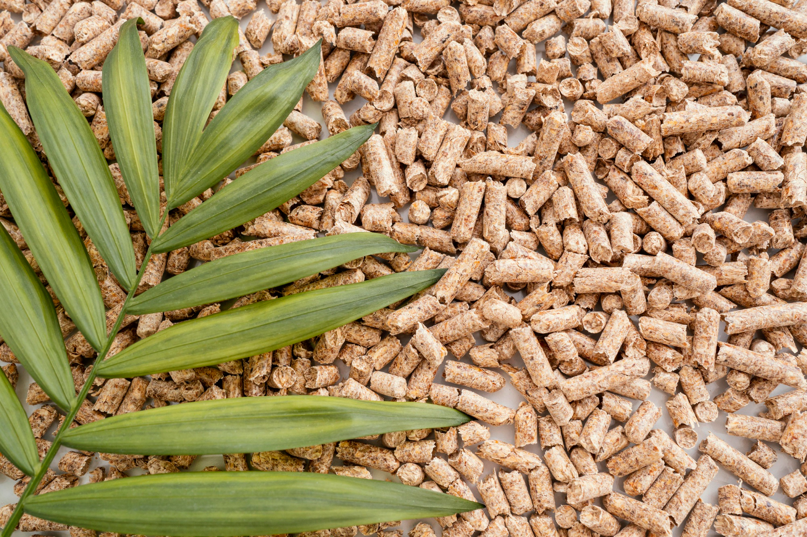
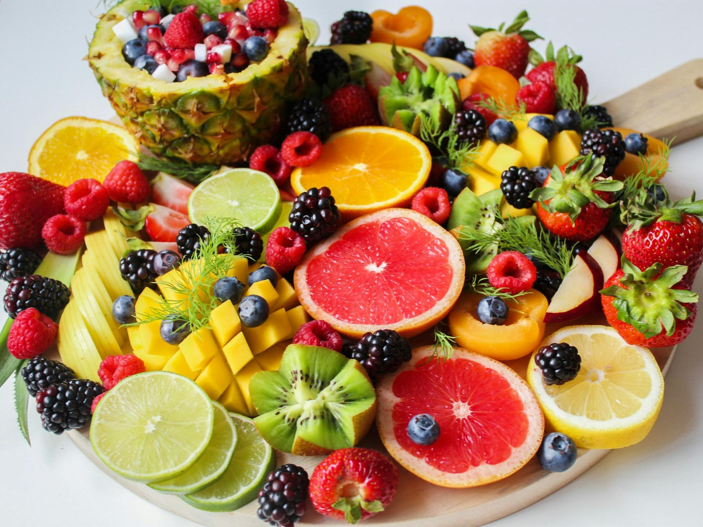
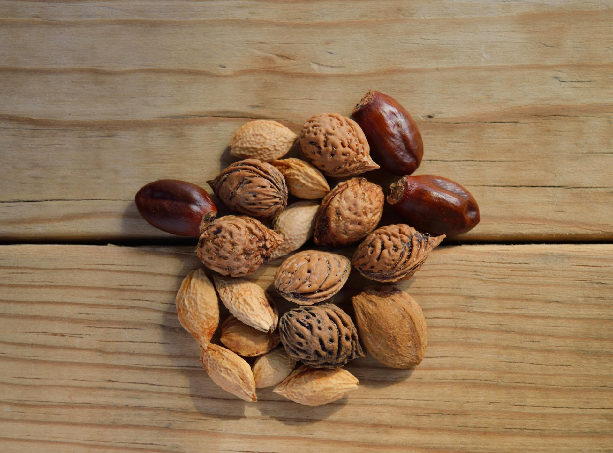

BIRD OWNERS
Learn About Us 🐦!
Birds have a rich history that traces back to their origins as maniraptoran theropod dinosaurs during the Mesozoic era. The discovery of Archaeopteryx in the 19th century highlighted the close relationship between birds and dinosaurs. After the Cretaceous–Paleogene extinction event 66 million years ago, four distinct lineages of birds survived, leading to the diversity we see today, including ostriches, waterfowl, and modern birds. Overall, birds are not only descendants of ancient dinosaurs but are considered to be dinosaurs themselves.
Common & Healthy Diets
No two birds are exactly alike, so there's no single perfect diet. On top of that, they tend to be very picky (and messy!) when it comes to food. However, to keep you little friend interested, offer a variety of fruits and vegetables with their meals every day. They might not eat it the same day, but it doesn't mean they won't devour it another day.
While their diet might be a bit more complicated than other pets, we DO NOT recommend feeding them the following foods:
- Avocado - Contain a toxic component called "persin".
- Caffeine - Can induce arrhythmias and hyperactivity.
- Chocolate - It contains caffeine and it can lead to vomiting and diarrhea.
- Salt - Just like for humans, salt causes dehydration and kidney dysfunction.
- Alcohol - Self-explanatory!
-
HOVER ME!
Seeds
Great source of energy and fat

-
HOVER ME!
Pellets
Contains all nutrients your bird needs
 -
HOVER ME!
Fruits
Great source of vitamins and minerals
 -
HOVER ME!
Vegetables
Also, a great source of vitamins and minerals

-
HOVER ME!
Nuts
Good source of protein and fat

Common Issues & Solutions
Your bird's health and happiness matter. Here are some of the most common challenges bird owners face and effective solutions to keep your feathered friend thriving.
Feather Plucking
This is a distressing behavior that can result from stress, boredum, an unbalanced diet, or underlying health issues. Birds are highly intelligent and require mental stimulation, without it, they could resort to self-destructive behavior such as this.
To prevent feather plucking, it's crucial to create stimulating environment. Make sure you give them plenty of toys or safe wooden chews. More importantly, make sure their diet is balanced to promote healthier feathers. If your bird keeps doing this, take it to an avian vet who can rule out medical conditions and provide other solutions.
Screaming/Excessive Noise
Birds are naturally vocal creatures, but excessive screaming can be a sign of attention-seeking, boredom, or frustration. As we mentioned before, birds are intelligent. If they learn that loud calls get immediate attention, they may continue this behavior.
To manage this behavior, it's important to reinforce quiet moments rather than reacting to loud outbursts. Ignoring unwanted screaming and rewarding calm behavior with treats or attention can teach your birth that quieter sounds are more effective. They also thrive on structure, so keeping a consistent schedule for playtime and social interaction can hel them feel secure.
Biting & Agression
Aggressive behavior in birds is often rooted in fear, territorial instincts, or a lack of proper socialization. A bird may bite if they feel threatened, overwhelmed, or if their boundaries are not being respected. Hormonal changes, especially during molting or breeding seasons, can also contribute to heightened aggression.
Understanding your bird’s body language is key to preventing bites. Signs of discomfort, such as fluffed feathers, dilated pupils, or an open beak, indicate that the bird needs space. Forcing interaction can reinforce negative associations, so it’s best to build trust gradually through positive reinforcement. Offering treats and engaging in gentle, rewarding interactions can help a bird feel more comfortable and less defensive.
Recommended Environments
Your little friend needs personal space, and it’s always best to create an open, enriching environment rather than a restrictive one. To help with this, we’ve designed the following Do’s and Don’ts for your bird’s living space.
DO
- Make sure there is enough space for them to be able to move freely aorund its home without buming its head or wings.
- Make your indoor flying space safe by closing all windows and doors before you let your bird fly.
- Encourage your bird to play with toys and to feed outside their cage.
- Put your perches in places that encourage your bird to fly.
- The only types of birds you can keep in groups in a cage are those who breed in colonies in the wild, such as budgerigars, cockatiels and lovebirds.
DON'T
- Do not try to keep more than one large bird in one cage, as they will probably fight.
- If you have a ceiling fan, always switch it off when your bird is free. They may be frigtened of it.
- Be carefulk about putting a mirror in your bird's home. They might see their own reflection as "company" or as a threat.
- You need to make sure your bird’s cage is not too cluttered with toys. They should be able to stretch and flap their wings whenever they want to.
- Don’t put materials like glass or plastic between the lamp and the bird, as this can block the rays.
Additional Resources
Diet & Foods
Common Bird Problems
Environments
PexPerts Support
While we are providing the basics of having a bird as a pet, we understand that there are MILLIONS of species that might require a different environment, diet, and much more.
At Paradigm Pet Professionals, we can provide owners a customized and unique guide or support for your pet.